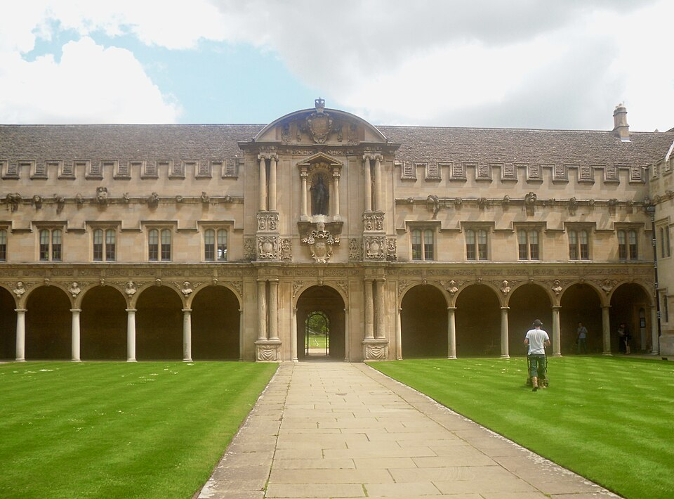
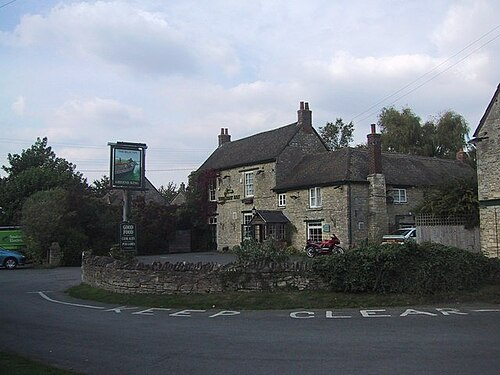

Роман · 1983
Загадка третьей мили
The Riddle of the Third Mile — шестой роман об инспекторе Морсе. Русское название рабочее.
- Первое издание
- Macmillan, Лондон, 27 октября 1983; в США — St. Martin's Press, февраль 1984
- Расследуют
- главный инспектор Морс и сержант Льюис
- Место
- Оксфорд и колледж Лонсдейл, Оксфордский канал у Трапа, Лондон
- Экранизация
- по мотивам — серия «Последний враг» (The Last Enemy), 11 января 1989; режиссёр Джеймс Скотт, сценарий Питера Бакмана
Завязка
Роман сплетён из трёх линий. Вторая мировая: братья Гилберт, близнецы Альберт и Альфред и младший Джон, водят танки под командой лейтенанта Браун-Смита. Наши дни: Браун-Смит, теперь профессор колледжа Лонсдейл, едет в Лондон, и там его опаивают в борделе. И Морс: глава колледжа просит его разобраться, куда пропал Браун-Смит. Морс когда-то у него учился, и, похоже, именно от профессора унаследовал свою придирчивость к грамматике и орфографии.
В Оксфордском канале у деревни Трап находят тело без головы и конечностей. Морс подозревает, что это Браун-Смит, смертельно больной опухолью мозга. Подозрение падает на профессора Уэстерби, который будто бы уехал на покой в Грецию.
Название отсылает к Нагорной проповеди: «И кто принудит тебя идти с ним одно поприще, иди с ним два» (Мф. 5:41). Роман и разделён на три «мили», а «третья миля» — ещё и хитроумная ловушка, которой трёх людей из колледжа по очереди заманивают в Лондон. Морс находит ключ, вспомнив проповедь о «религии второй мили».
Развязка — открыть, если роман прочитан
Через одного из Гилбертов, чья фирма перевозит вещи Уэстерби, Морс находит его новую лондонскую квартиру, а в ней второй труп, заколотый отвёрткой. Убийцу он не распознаёт и отпускает. Ко второй «миле» в живых не остаётся ни одного подозреваемого: одно убийство, одно самоубийство и одна естественная смерть.
Дальше Морс восстанавливает события в основном догадками. Близнецы мстили Браун-Смиту за гибель брата Джона, сгоревшего в танке, и заманили его в Лондон, но, услышав, что Джон покончил с собой, отпустили. Браун-Смит тем же способом заманил Уэстерби, который ошибочно считал, что тот голосовал против него на выборах главы колледжа. Выяснив, что против обоих голосовал сам глава, они заманили и убили его. Тело в канале у Трапа — это глава колледжа, его вывез на своей машине Уэстерби. Уэстерби убил Альфреда; Альберт убил Уэстерби и покончил с собой, узнав, что от него ушла жена. Браун-Смит умер от опухоли.
Люди
| Имя | Кто это |
|---|---|
| Браун-Смит | Профессор Лонсдейла, бывший лейтенант, смертельно болен; когда-то учил Морса. |
| Уэстерби | Профессор Лонсдейла, его соперник. |
| Глава колледжа | Безымянный Master Лонсдейла. |
| Альберт и Альфред Гилберты | Близнецы, бывшие танкисты; у одного фирма по перевозке мебели. |
| Джон Гилберт | Их младший брат, погиб в горящем танке. |
Юность Морса
Седьмая глава — главный биографический ключ ко всему циклу. Морс учился в колледже Святого Иоанна на «Великих» — классической филологии и философии. Он влюбился в Венди Спенсер, аспирантку из колледжа Святой Хильды, роман кончился, и учёба рухнула вместе с ним. Морс провалил экзамены и ушёл из Оксфорда замкнутым и озлобленным, хотя и не сломленным. Незадолго до смерти отец посоветовал ему пойти в полицию.




Места
| Место | Что там происходит | |
|---|---|---|
| Трап | есть | Деревня на Оксфордском канале к северу от Кидлингтона. Здесь находят тело. |
| Колледж Лонсдейл | вымысел | Колледж Браун-Смита, Уэстерби и их главы. |
| Колледж Святого Иоанна | есть | Здесь учился Морс. |
| Колледж Святой Хильды | есть | Женский колледж, где училась Венди Спенсер. |
| Лондон | есть | Бордель, где опаивают Браун-Смита, и новая квартира Уэстерби. |




Реалии
- «Великие» (Greats, Literae Humaniores)
- Оксфордский курс классики: древнегреческая и латинская литература, история и философия. Самый престижный и самый трудный курс старого Оксфорда.
- Глава колледжа (Master)
- В разных колледжах его зовут по-разному: Master, Warden, Provost, Principal. Его выбирают члены колледжа, и выборы бывают жестокими.
- Колледж Святой Хильды
- В пятидесятые — один из пяти женских колледжей Оксфорда; мужчин в него принимают только с 2008 года.
- Поприще
- Так Синодальный перевод передаёт римскую милю. Римский закон позволял солдату заставить местного жителя нести его поклажу одну милю.
Книга и сериал
«Последний враг» вышел 11 января 1989 года, вторая серия третьего сезона. От романа осталось немного: сценарист Питер Бакман считал, что ушёл от книги так далеко, что не вправе брать её название. Название серии — из Первого послания к Коринфянам: «Последний же враг истребится — смерть» (15:26). В ролях: Джон Тоу, Кевин Уотли, Джеймс Граут (Стрейндж), Барри Фостер (сэр Александр Рис, глава колледжа), Майкл Олдридж (Артур Драйсдейл), Тенниел Эванс (доктор Дэвид Керридж), Аманда Хиллвуд (Грейлинг Рассел).
- Колледж называется Бомонт; фигуры романа слиты в три персонажа.
- Тело находят в канале у Трапа, допросы идут в пабе «Лодка» там же; сады снимали в колледже Корпус-Кристи, прогулку Морса — в Брейзноузе.
- У Морса весь фильм болит зуб, и он лечит его виски.
- Из классики звучит только Струнный квинтет до мажор Шуберта.
Развязка серии — открыть
Драйсдейл, у которого опухоль, заманивает Керриджа в ловушку и пытается задушить, но, узнав правду, отпускает. Керриджа убивает Рис, а Риса — умирающий Драйсдейл. Тело из канала — человек, которого Драйсдейл убил из-за романа с его покойной женой.